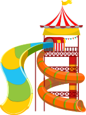
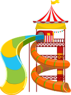

摩天輪
高人氣
維也納摩天輪是現存唯一建於19世紀的摩天輪，至今仍在營運。維也納摩天輪於1897年為弗朗茨·約瑟夫一世的金禧慶典而興建在奧地利維也納利奧波德城普拉特遊樂場，總高64.75米。


旋轉木馬
高人氣
旋轉木馬或迴轉木馬是遊樂場機動遊戲的一種。在一個旋轉的平台上有座位供遊客乘坐，這些座位傳統上都會裝飾成木馬，並且會上下移動，也會裝飾成汽車飛機或者其它卡通動物形象的座位，但這些座位通常不會移動。

飛天椅
高人氣
坐上高達18層樓加上360度大旋轉明星遊樂設施，心理的忐忑在醞釀翻轉，天旋地轉啟動後，才是尖叫聲此起彼落無限延續的開端！一坐上去讓您從低速一直到極速，東翻西轉外加公轉和自轉，順時針轉動後再加上逆時針轉動，強大無比的離心力。
海盜船
高人氣
傳統的海盜船遊戲最多只作一百八十度的擺動，新的海盜船擺動時，會接近360度完全倒轉，感受到危險邊緣來回的視覺刺激及尖叫。位於「船首」及「船尾」的因為擺幅最大，速度最高，所受的拉力最大，因此亦是最刺激的。

滑水道
高人氣
兩條採用露天與密閉混和設計的滑水道，全國首創的府衝玩法。在明暗變化全國首創的輔衝玩法中，手握飛毯，頭下腳上有如阿拉丁控制魔毯的飛行一般。

雲霄飛車
高人氣
擁有全世界最長的雲霄飛車，全長1.5公里，將近12層樓的垂直俯衝，驚險又刺激，是由舊雲霄飛車升級改裝而成，原來的飛車在1978年落成時，是當時全世界最高最快的雲霄飛車，也因此「扭曲的巨人」特別受到矚目。


 
